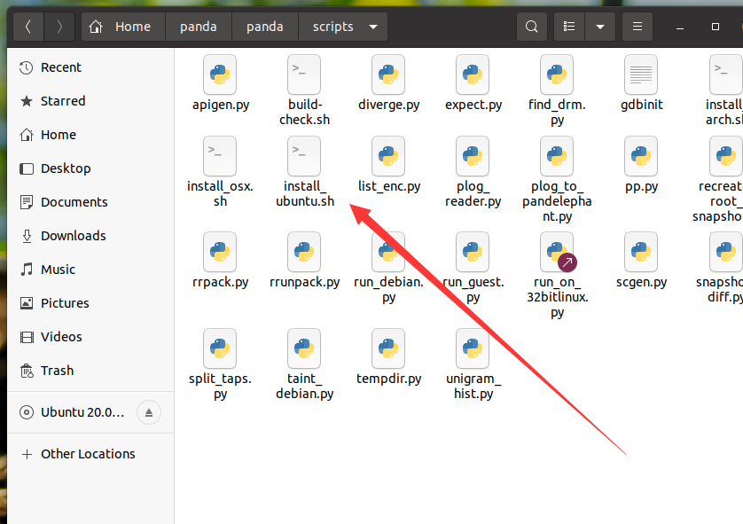
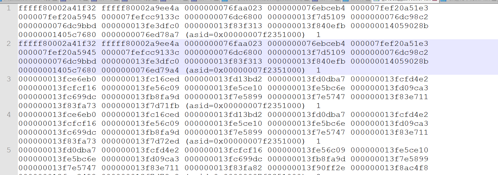

每周学习笔记2022-8-2
每周学习，用于督促下班后好好把握自由时间来学习。
接上文，看panda。
这星期又是比较烦躁的一星期，周一到周四需要定完试用期目标，作为团队唯一一个会点二进制（漏洞挖掘和逆向方向）真的很难顶。周五要去outing一直玩到周二，真的佛了。本周学习记录只能整四天了。
Panda
污点追踪引擎
几个很牛的特性
1.重放
2.丰富的插件
对于第一个比如逆向破解软件，找不到录入函数，直接用panda跑一波然后搜索字符串就能追踪到输入
接着自己写一些插件然后重放，直接搞定。作者这边演示了三种情形，破解 漏洞复现 和数据dump
漏洞复现对于我们漏洞挖掘还是挺有用的，可以用于检测漏洞，一些不会触发crash的漏洞。但是testcase还是需要自己去写。
但是还是有一些不确定性的。因为我看底层还是qemu，在自己的虚拟机里搭建后模拟跑操作系统然后跑软件去追踪，这样会不会巨慢？比如有个场景，通讯类软件，需要时不时发包来判断是否离线，如果跑的太慢了服务器没收到回应超时默认判定超时，永远走不到正确的路径怎么办？
当然这只是一些自己的小疑问，到底成不成还得装完才知道。
安装与使用

我的环境是Ubuntu20.04 直接运行这个install即可，安装需要一点时间，缺少的依赖自行google一下即可找到。
后面具体使用可以根据https://adalogics.com/blog/Building-a-custom-malware-sandbox-with-PANDA-Part-1文章来解决
模拟命令
1 | |
先运行下面的然后会起一个vnc连接一下即可，推荐使用win7，win10特别卡，32位最好，当然64位也支持。
可以自己制作镜像，新建个虚拟机然后把vmdk文件复制出来后
qemu-img convert -f vmdk -O qcow2 x.vmdk x.qcow2
即可
下面是一些常用的插件命令，比如osi和stringsearch
1 | |
因为panda更新了但对应的很多插件readme都没更新，-os windows-64-7sp1这个可能没写，但是源码中有。
stringsearch插件单纯吧string匹配出现处的栈回溯给打印了出来

功能已经很强大了另一个osi可以打印出基址啥的。
可以当作逆向的辅助工具。